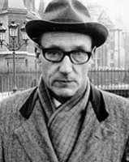

(1914 – 1997)

Tam adı "William Seward Burroughs II" olan, ama takipçilerinin William S. Burroughs olarak bildikleri ve sevdikleri yazar, Jack Kerouac ve Allen Ginsberg ile birlikte "beat" akımını başlatan yazarlardan biri olarak tanınır. Yazdığı hemen hemen her şey deneyimlerinden kaynaklandığı için yazılarının çoğu yarı–otobiyografik olarak tanımlanabilir. Ancak okuyanlar bilir ki "yaşadıklarını yazmasına" rağmen Burroughs, "yazdıklarının yaşanmasını" kimseye tavsiye etmez!
5 Şubat 1914'te St. Louis/Missouri'de doğan William S. Burroughs (okunuşu: vilyım barrovs), ailesi çok zengin olduğu için hayli rahat şartlarda büyüdü. 1936'da Harvard Üniversitesi'nden mezun olduktan sonra Viyana Üniversitesi'nde tıp okudu. Bu yıllarda Nazi zulmünden kaçan Ilse Klapper adlı bir genç kıza ABD vizesi aldırabilmek için onunla Hırvatistan'da evlendi. Kısa sürede boşansalar da ikilinin dostlukları uzun yıllar sürdü. 1942'de Amerikan ordusuna başvuran Burroughs, tahmin ettiği gibi subay değil de piyade yapılınca başvurusunu geri aldı. Annesinin de desteğiyle eski bir hastalığı bahane ederek savaşa gitmemeyi başardı. O günlerde başladığı alkol ve uyuşturucuyla ilişkisi, tüm hayatı boyunca devam etti. Açıkça ifade ettiği eşcinsel eğilimleriyle tanındı ve sıklıkla uyuşturucularla ilgili deneyimlerini de yazdı. 1943 yılında Jack Kerouac ve Allen Ginsberg gibi Beat kuşağının önemli yazar ve şairleriyle tanışıp sonraki yıllarda çeşitli kitaplarda onlarla işbirliğinde bulundu.
1950'de eski kız arkadaşı Joan Vollmer'dan bir oğlu olan yazar, onlarla birlikte Meksika'ya gitti ve İspanyolca öğrenmeye başladı. Ancak 1951'deki bir bar eğlencesi sırasında Giyom Tell'den bir sahne canlandırmaya çalışırken kazayla ikinci karısı Joan'ı vurdu. Bu olaydan sonra hayatının büyük bölümünü Güney Amerika'yı dolaşıp pek çok uyuşturucu deneyerek ve gelecekteki yazıları için araştırma yaparak geçirdi. Yazarın hayatını inceleyen hemen hemen bütün akademisyenler, bu cinayet olayının Burroughs'un yazarlık kariyerine kesin olarak başlamasında büyük önemi olduğu konusunda hemfikirdirler.
1945 yılında Jack Kerouac'la birlikte yazdıkları Ve Hipopotamlar Tanklarında Haşlandı adlı roman, ancak 2008 yılında yayımlanabildi. Burroughs'un yayımlanan ilk romanı, uyuşturucu deneyimlerini anlatan Canki (1953) oldu. Aynı günlerde yazılan, ama 1985'te yayımlanan Queer bir anlamda Canki'nin devamı olarak kabul edilse de Burroughs'un sonraki tüm romanlarında görülecek olan yazarlık niteliklerinin ilk kez ortaya çıktığı roman olarak da bilinir. Yazılarında birçok kişinin "kafa karıştırıcı ve ukalaca" olarak nitelendirdiği kolaj tekniğini kullanan yazar, gerçek şöhreti Çıplak Şölen (1959) romanıyla yakaladı. Roman "müstehcenlik" suçlamasıyla mahkemeye verildiyse de 1966'da aklandı. Çıplak Şölen fotoğraflar veya çizimlere dayanmayan, sadece yazılı malzeme olarak ABD'de mahkemeye verilen ve aklanan en son roman olmuştur.
1959'da Paris'e, sanatçıların bir arada yaşadıkları Beat Hotel'e taşınan ve 1966'da Londra'ya geçene dek orada kalan Burroughs, bir yandan da sürekli yazıyordu: Dutch Schultz'un Son Sözleri (1969) ve Vahşi Çocuklar (1971), o dönem eserleri arasındadır. 1974'te ABD'ye dönen yazar, uyuşturucuyu bırakıp aralarında öğretmenliğin de olduğu çeşitli işler denediyse de hiçbirini beğenmedi ve sürekli iş değiştirdi. O günlerde yazdıklarından parçalar okuyarak barlarda ve sanat merkezlerinde tek kişilik gösteriler yapma işini keşfeden yazarın en sevdiği ve uzun süre tuttuğu iş bu oldu ve Burroughs, 1976'da ülkesine kesin dönüş kararı aldı.
1981'de oğlu Billy'yi siroza kurban veren Burroughs, 1979'da tekrar kullanmaya başladığı eroine sıkı sıkı sarılmaya başladı. Bu arada Kansas'a yerleşen yazar, hayatının son yıllarında da uyuşturucu bağımlılığından kurtulamadı. Çoğu eleştirmen Burroughs'un yapıtlarının uyuşturucu kullanımı ve ahlaksızlığı yücelten, niteliksiz yazılar olduğunu düşünmektedir. Ancak onun sanatsal yeterliliğini takdir eden ve yazılarını ileri görüşlülüğünün kanıtı olarak kabul eden eleştirmenler de bulunmaktadır. James Graham Ballard'a göre Burroughs "II. Dünya Savaşı sonrasındaki en önemli yazar", Norman Mailer'a göre ise "dehanın hükmettiği tek Amerikalı yazar"dır.
Burroughs, 2 Ağustos 1997 tarihinde Kansas'ta kalp krizinden öldü ve doğum yeri Missouri'de toprağa verildi.
Seçme Romanları: Canki (1953/1994), Çıplak Şölen (1959/1998 – Versus Kitap, 2010), Yumuşak Makine (1961), Patlamış Bilet (1962 – Sel Yayınları, 2011), Nova Express (1964), E, O Zaman Ölüm TV'nin Sahibi Kim? (1967), Ali'nin Gülümseyişi (1971), Elektronik Devrim (1971), Ermişler Limanı (1973), Kızıl Gecenin Kentleri (1981), Ara Bölge (1987/2006 – Ayrıntı Yayınları, 2012), Şans Hayaleti (1991), Benim Eğitimim & Bir Rüyalar Kitabı (1995 – İstanbul, 2011), Son Sözler: William S. Burroughs'un Son Günceleri (2000)